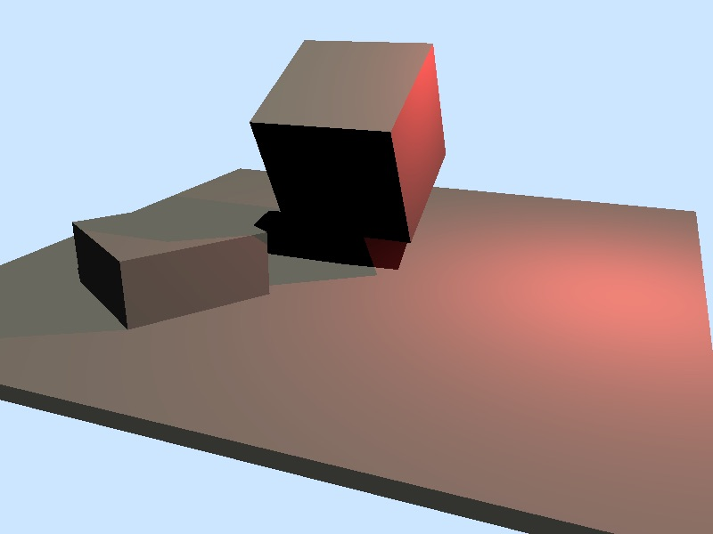
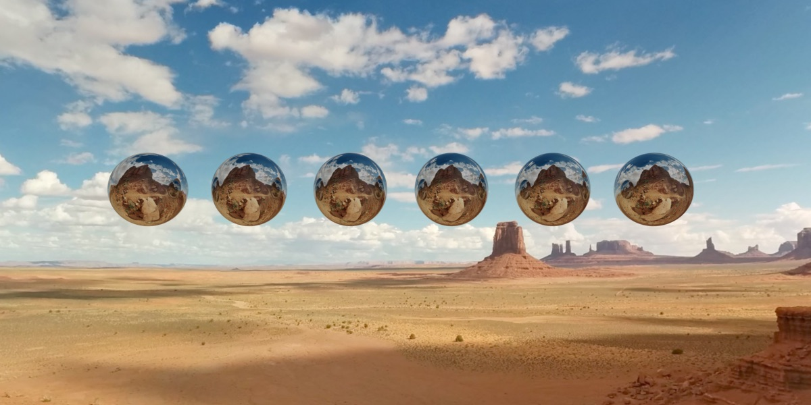
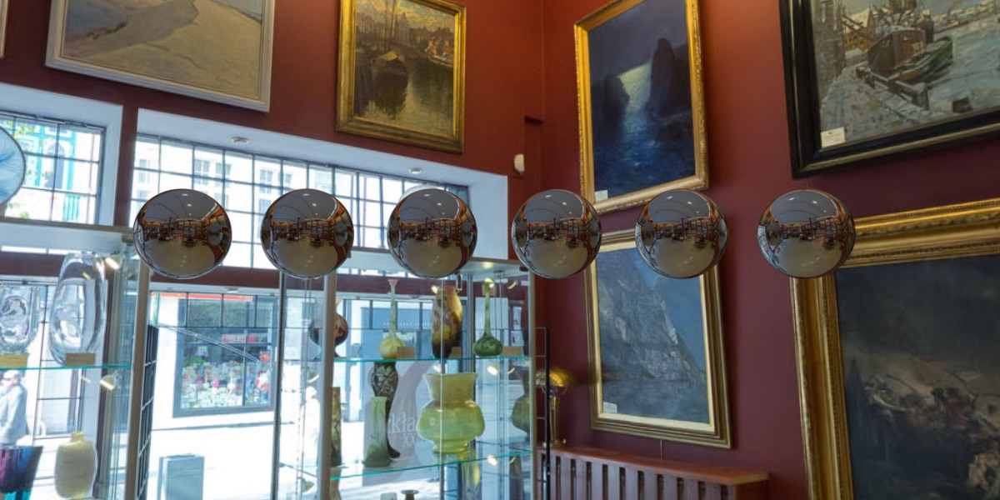
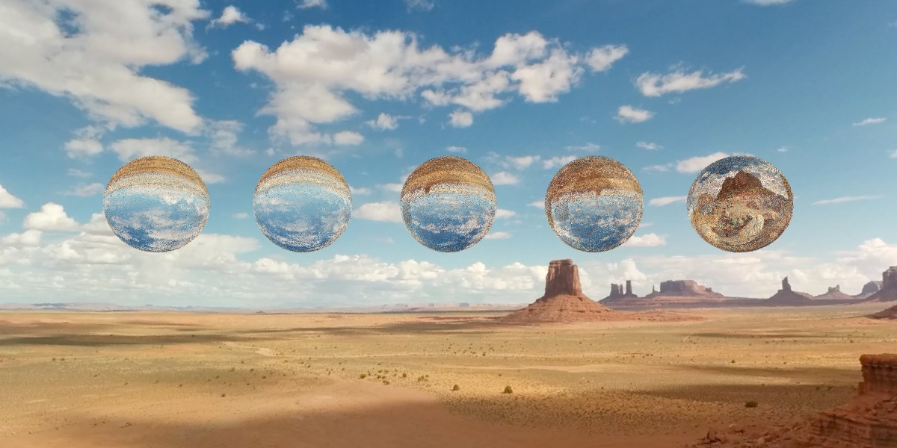
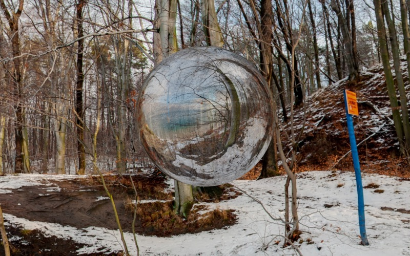
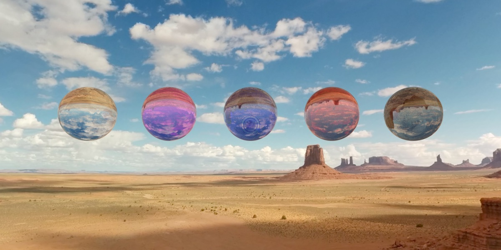
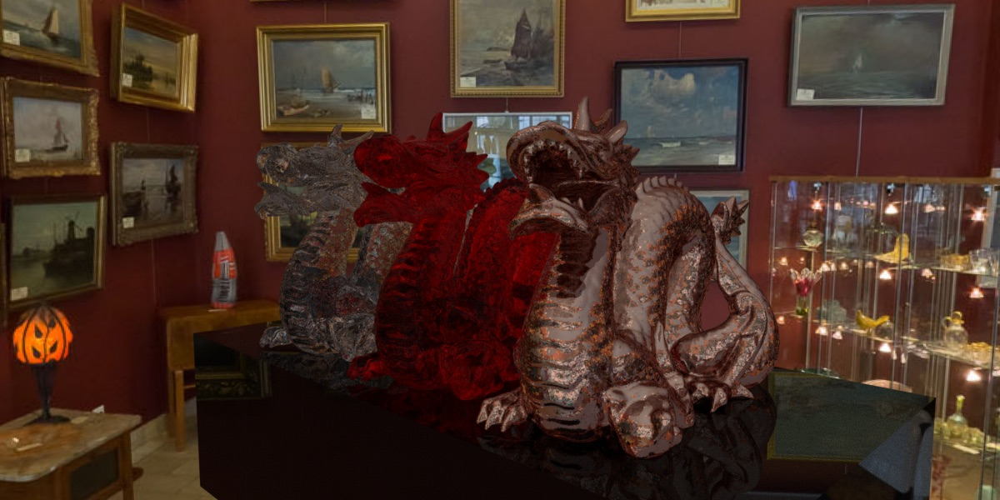
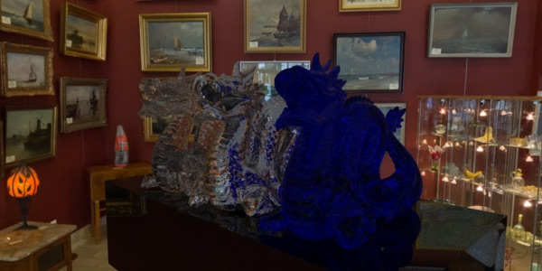
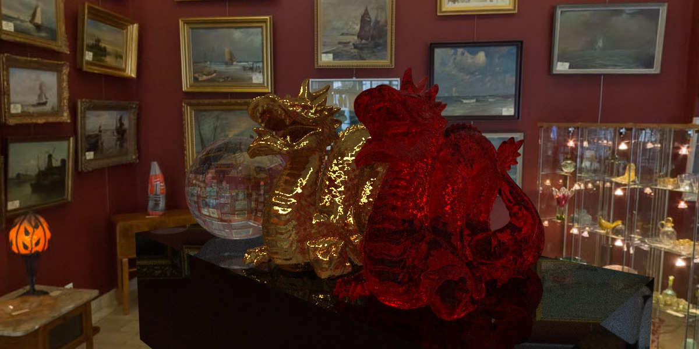
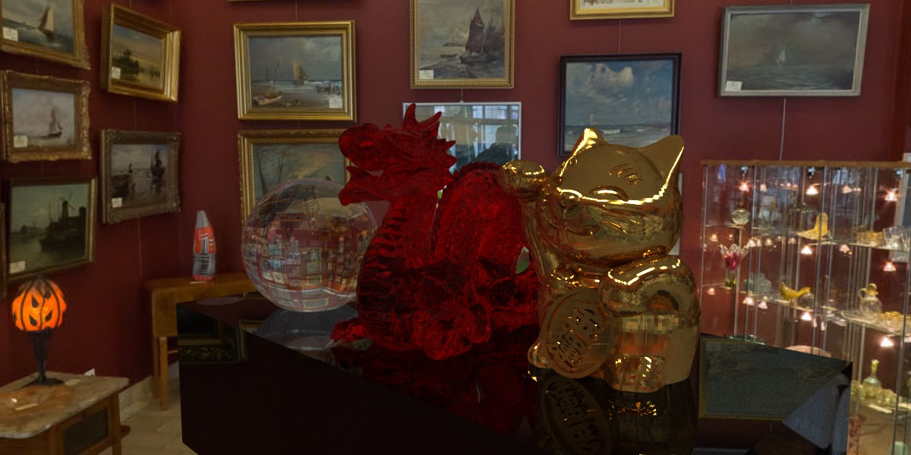

Recursive Path Tracing
One way to implement ray tracing is to use Monte Carlo method based path tracing. Fundamentally, path tracing integrates over all the illuminance arriving to a single point on a surface recursively, and you repeat this process for each ray shoots out form the camera. The illuminance is calculated using a BRDF (Bidirectional Reflectance Distribution Function) which is a function that defines how light is reflected at a surface.
My initial version of the path tracer supports diffuse lighting without shadows from both point and directional light sources on primitive object such as boxes. I also have a simple camera model with adjustable camera matrix, field of view, and output image resolution. It looks something like this: 
Bounding Volume Hierarchy (BVH)
For a path tracer, we can roughly estimate its rendering time as being proportional to the number of ray-triangle intersection tests required. My initial version of the path tracer is very primitive, for each ray I loop through all triangles in the scene to check for intersection, but this method is very expansive and inefficient, so I decided to do something to speed up my path tracer. The obvious way is to add multi-threading, which I did using OpenMP. The rendering process is dynamically scheduled, the image is divided into batches where each batch is a row of pixels and are fed into the threads. Multi-threading increased the rendering speed significantly.
Another common way to increase rendering speed is to take advantage of spatial data structure and that's why I decided to implement a type of BVH called Axis-aligned Box Tree. The idea is to wrap all triangles in the scene in bounding volumes that form the leaf nodes of the tree. These nodes are then grouped as small sets and enclosed within larger bounding volumes. These, in turn, are also grouped and enclosed within other larger bounding volumes in a recursive fashion, eventually resulting in a tree structure with a single bounding volume at the top of the tree. This reduces the ray-triangle intersection check from linear to logarithmic. The tree construction process happens before we begin actual rendering, it can be a time consuming process that itself often runs at O(N log N) performance for N triangles in the scene. Note that O(N log N) is slower than linear, but we hope that the entire tree creation is still faster than the render itself. Ultimately however, as N grows, this can be the limiting factor to scene complexity.

AntiAliasing
Lambertian reflectance and Cosine-Weighted Hemisphere sample distribution
Fresnel metals
Environment Mapping
I started out implementing an spherical environment map because it is an easy way to make rendered images look more realistic. To implement the environment map, for each ray that doesn't intersect with anything in the scene I simply UV map the ray direction onto the sky box texture to sample a color. To make testing easier, I implemented sphere ray intersection and used spheres instead of other complicated models.
I got some really nice environment panorama online for free from http://texturify.com/. Below are the results


Fresnel Dielectric
Since I already have a working path tracer with ideal fresnel surface implemented, I decided to implementing Fresnel Dielectrics next. The ideal fresnel surface assumes total internal reflection, which means the proportion of the light reflected is 100%, so only the reflection path is chosen. For the Fresnel Dielectrics, I calculate the proportion of the light reflected and transmitted using the Fresnel Equations, then chose either the reflection or the refraction path based on importance sampling given fr (Fresnel reflection coefficient) and ft (Fresnel refraction coefficient).
The following image shows a Fresnel Dielectric spheres with refraction index of 1.333(water), 1.309(ice), 1.8(glass), 2.42(diamond), and 10 in order from left to right. All spheres below have absorption coefficient of 0, roughtnes of 0.2 and sampling size of 2x2 rays per pixel.

This is the same image with 20x20 sampling size, it's a lot less noisy as we can see.
Yet another image showcasing Fresnel Dielectric material with refraction index of 10.

Absorption
I then used the Beer-Lambert law to achieve color absorption for Fresnel Dielectrics. The Beer-Lambert law relates the absorption of light to the properties of the material through which the light is traveling. The following image has different absorption coefficient and absorption colors. Notice that the middle sphere has a ring shaped noise to it, sadly I don't know what's causing it. 
Cook Torrence BRDF - Totally Fail
I also wanted to try implementing Cook Torrence BRDF to simulate rough metals. However, after reading the original paper I couldn't figure out the monte carlo integration part so I got some weird results.
The copper-ish looking dragon on the far right is rendered using Cook Torrence BRDF with roughness of 0.8. But instead of looking like rough copper it looks rusted.

The silver-ish looking dragon in the middle is also rendered using Cook Torrence.

Final Results
These are the final images I rendered. The sphere on the far left is transparent glass Fresnel Dielectrics and the dragon on the right has absorption color of red. The black holder is also Fresnel Dielectrics with absoprtion color of RGB(0.2, 0.2, 0.2) and really high absorption coefficient of 20. The gold dragon in the middle is Ashikhmin BRDF. Those images below each have a sampling rate of 10x10 per pixel and it took about an hour to render each image on my 13'' macbook pro. The result looks pretty satisfying.

Yet another image.

References